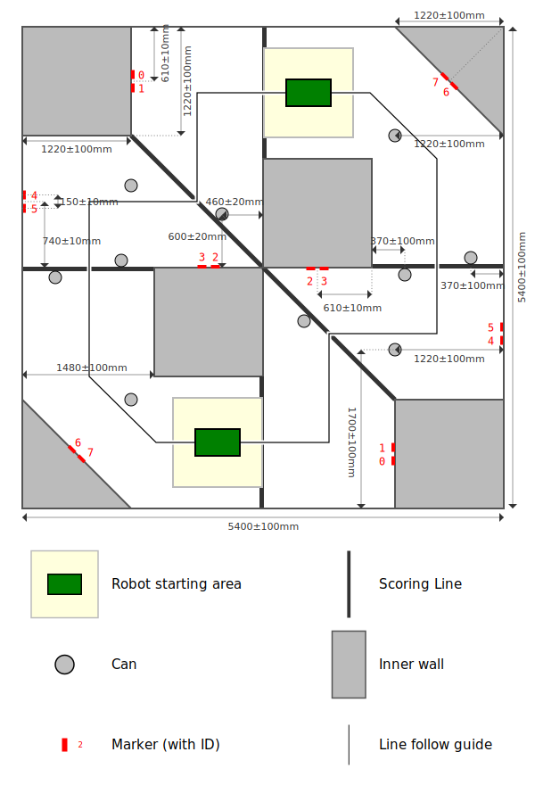

Specifications
Markers
The arena is labelled with fiducial markers. Each marker pattern encodes a number. Each marker number is associated with a particular feature within the arena, and also has an associated size.
| Item |
Marker Numbers |
Marker Size (mm) |
| Arena boundary |
0 - 3 |
100 |
The markers can be printed on a black-and-white printer.
Eight arena wall markers are positioned around the arena as shown in the arena specification. Marker codes are mirrored on each side of the arena.
Wall markers are placed such that the bottom of the marker is 20 ±5mm from the arena floor.
Arena

-
The above figure represents, to scale, a birds eye view of the arena. The arena is
5.4m square.
-
The floor of the arena is covered with a closed-loop, short pile carpet.
-
The perimeter of the arena floor is delimited by the arena wall, which has a minimum height of 100mm.
-
Starting areas are 1000 ±50mm squares and will be marked by tape which is considered part of the starting area.
-
Starting area 0 is at the top of the arena diagram, and area 1 is at the bottom.
-
The green boxes denote a robot in their start locations, shown in yellow. Robots may start anywhere inside their starting area facing any direction.
-
The inner walls of the arena have a minimum height of 170mm.
-
SourceBots reserves the right to have match officials in the arena during games.
Robot flags

-
A "robot flag" is a removable identifier that will be attached to a robot throughout a match. It features identifying areas to allow spectators to easily associate a robot with its starting area. The markings in the identifying areas are intentionally not specified.
-
Flags are not counted when considering the starting size of the robot.
-
The identifying part of the robot flag must be visible when attached to the mount.
-
The mounting cylinder must be permanently affixed to the main chassis of a robot, and vertical when the robot is in its typical stopped position.
Cans
-
Cans are cylindrical metallic containers weighing 300g ±20g.
-
Cans are 67mm ±3mm in diameter with a height of 100mm ±5mm.
-
Cans will be arranged as shown in the arena specification.
-
Cans are electrically conductive and ferromagnetic.